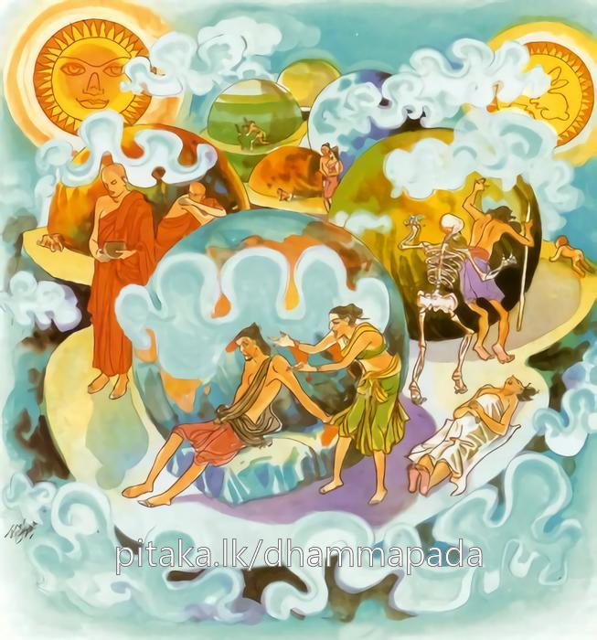

21-6 වැදෑරට වැසි භික්ෂූ නමක්
මෙම කතාව ධම්මපද අටුවාවෙන් ද කියවන්න.
දුප්පබ්බජ්ජං දුරභිරමං දුරාවාසා ඝරා දුඛා
දුක්ඛො’සමානසංවාසො දුක්ඛානුපතිතද්ධගූ
තස්මා න චද්ධගු සියා දුක්ඛානුපතිතො සියා.
(භෝගසම්පතුත් බන්ධුජනයාත් හැර දමා) මෙ සස්නැ මහණ වීම දුෂ්කර ය. (උගහට ය.) පැවිදි වූවහු විසින් ද (පිඬු සිඟා දිවි පැවැත්වීම් ද සිල් රැක්මෙන් ධර්මානුධර්මප්රතිපත්තිය පිරීම් ද වශයෙන්) සස්නෙහි සිත ඇලැවීම දුෂ්කර ය (උගහට ය). ගෘහයෝ හෙවත් ගෘහවාසයෝ (ගිහිගෙහි වසන්නවුන් විසින් තමහට ඉසුරු ව සිටින්නවුනට කළ මනා කාර්ය ද පරිජනයාටත් මහණබමුණනට ත් කටයුතු සංග්රහ ද ඇති බැවින්) දුක් හ. (උගහටයහ.) අසමාන අදහස් ඇත්තවුන් හා එක් වැ විසීම ද දුක් ය (උගහට ය). සසර නැමැති අදන් මඟට පැමිණියේ දුක විසින් ලුහුබඳනා ලදහ. එ බැවින් සසර අදන් මඟට පැමිණියෙක් නො වන්නේ ය, සසර දුක විසින් ලුහුබඳනා ලද්දෙක් ද නො වන්නේ ය.

වැදෑරට වැසි භික්ෂු නමක් විසල් පුරයෙහි වූ එක්තර වන ලැහැබෙක එකලා ව වාසය කරන්නේ ය. ඒ කාලයෙහි එක් දවසෙක එහි මුළු රැය පුරා පැවැති මත් උත්සවයෙක් වී ය. මේ මහණ ඒ උත්සවයෙහි මහජනයා විසින් කරණු ලබන නන්වැදෑරුම් නැටුම් ගැයුම් තැළුම් හඬ අසා අඬමින්
“වලැ ලූ දැවකඩෙව් - වසමු අපි වලා එකලා,
දැන් මෙබඳු රෑහි - අපට වැඩි පවිටෙක් කො ද?”
යි මෙය කීයේ ය.
මෙ තෙමේ වැදෑරට රජදරුවෙක් වූයේ වාර විසින්තමාට පැමිණි රජකම හැරදමා පැවිදි ව වනයෙහි විසී ය. එ දවස් එහි වැස්සෝ විසල් පුරයෙහි අගනුවර, සිවුමහරජය එකාබද්ධ කළ සේ ධ්වජපතාකාදියෙන් මනා කොට සරසා ඉල්මස මැදිපොහෝ දවසෙහි කාර්තිකොත්සවය පැවැත් වූහ. රෑ මුළුල්ලෙහි එහි බෙර - මිහිඟු බෙර - පණාබෙර - ගැටබෙර - පටහ - මද්දල - ආතත - විතත - ඝන - සුසිර - වීණාදීන්ගේ හඬ හැම තැනින් ඇසෙන්නට වන. හි රජවරු සත් දහස් සත් සිය දෙනෙක්, එ පමණ ම ඔවුන්ගේ යුවරජසෙනාපතීහු නුවර මංමාවත්හි එදා හැසිරෙන්නට වන්හ. මේ මහණ, සැටරියන් පමණ දික් වූ මහසක්මනෙහි සක්මන් කරණුයේ අහස මැද සිටි පුන්සඳ දැක සක්මන් කෙළවර තුබූ හේත්තු පුවරුවෙහි වැතිර ගෙණ අබරණ ලා සැරසීමක් නැති ව සිටිනා බැවින් තමන් වෙනෙහි හැරදැමූ දරකඩක් මෙන් සිතා “අනේ! මට වඩා පහත් ලෙසින් දිවි යවන එකෙක් මෙහි වේ දෝ”යි සිතන්නට වූටය් ය. සැහැවියෙන් ආරණ්යකඞ්ගාදිගුණයෙන් යුක්ත වූවත් මේ මහණ, එ කෙණෙහි රාගය නිසා හටගත් සසුනෙහි නො ඇල්මෙන් පෙළුනේ මෙසේ සිතුයේ ය. මෙසේ කීයේ ය. මෙය අසා සිටි එ වන අරක් ගත් දෙවියකු විසින් “මේ මහණ සංවේගයට පමුණු වන්නෙමි”යි සිතා කියූ,
“වලැ ලූ දැවකඩෙව් - වසහි තෝ වලැ එකලා,
සග් ගියහු පතනා - තිරිසනුන් සේ ඒ තට,
බොහෝ දැන කැමැති - වෙති යනු දනුව තෝ දැන්”
මේ ගය අසා පසුදා බුදුරජුන් වෙත එළැඹැ වැඳ එකත් පසෙක හුන්නේ ය. බුදුරජානන් වහන්සේ එ පුවත දැන ගිහිගෙය දුක්බව දක්වනු කැමති සේක් දුක් පසක් එක් කොට මේ ධර්මදේශනාව කළ සේක.
දුප්පබ්බජ්ජං දුරභිරමං දුරාවාසා ඝරා දුඛා,
දුක්ඛො සමානසංවාසො දුක්ඛානුපතිතද්ධගු,
තස්මා න චද්ධගු සියා දුක්ඛානුපතිතො සියාති.
පැවිදිවීම දුෂ්කර ය. (සසුනෙහි) සිත ඇලවීම දුෂ්කර ය. ගෘහයෝ දුක් වූ වාස ඇත්තාහ. දුක්හ. අසමානයන් හා එක් ව විසීම දුක් ය. සසර අදන්මගට පිළිපන්නෝ දුකින් ලුහුබඳිනා ලදහ. එහෙයින් සසර අදන්මගට පැමිණියෙක් නො වන්නේ ය. දුකින් ලුහුබඳින ලද්දෙක් නො ද වන්නේ ය.
දුප්පබ්බජ්ජං = පැවිදිවීම දුෂ්කර ය. පැවිදිවීම අපහසුවෙන් කළ යුතු ය.
පැවිදි වන්නහු විසින් මඳ වූ හෝ බොහෝ වූ හෝ භෝග සම්පත්තිය ද නෑ සහලේ නෑ ආදී වූ ඥාතිවර්ගයා ද හැරදමා ඒ සියල්ල පැවිද්දට පටහැනිය යි සලකා පැවිදි වියයුතු බැවින් පැවිදිවීම පහසු නැත. සියලු ගිහිපවත් හැරදමා පැවිදි වියයුතු ය. ඒ වනාහි සිතට දුකෙකි. “අප්පං වා මහන්තං වා භොගක්ඛන්ධඤ්චෙච ඤාතිපරිවට්ටඤ්ච පහාය ඉමස්මිං සාසනෙ උරං දත්වා පබ්බජ්ජා නාම දුක්ඛං” යනු අටුවා.
දුරිභිරමං = සිත් ඇලවීම නො පහසු ය. උගහට ය.
පැවිදි ව ගෙණ පිඩු සිඟීමෙන් ජීවිකාවෘත්තිය පවත්වමි, යි අප්රමාණ වූ ශීලස්කන්ධය රැකීමෙන් ධර්මානුධර්මප්රතිපත්තිය පිරිය යුතු බැවින් ද සසුනෙහි සිත් ඇලවීම අපහසු ය. උගහට ය. “එවං පබ්බජිතනොපි භික්ඛාචරියාය ජීවිතවුත්තිං ඝටෙන්තෙන වා අපරිමාණසීලක්ඛන්ධගොපනධම්මානුධම්මපටිපත්තිපූර්ණවසෙ න අභිරමිතුං දුක්ඛං” යනු අටුවා.
දුරාවාසා ඝරා දුඛා = ගෘහයෝ දුක් වූ වාස ඇත්තාහ. දුක්හ.
ගිහිගෙයි වසන්නහු විසින් රාජකාරිය ඉසිලිය යුතු ය. නො පිරිහෙළා කළ යුතු ය. තමාට සතුරුව සිටියවුනට කළමනාකාරිය ඉසිලිය යුතු ය. අඹුදරුවනට කළමනා කාරිය නො අඩු ව කළ යුතු ය. පිරිවරදෙනාට කළමනාකාරිය ඔවුන් සිත් ගන්නා ලෙසින් කළ යුතු ය. මහණබමුණන්හට සඞ්ග්රහ කළ යුතු ය. අසල් වැසියනට උදවු උපකාර කළ යුතු ය. දුගීමගීයාචකාදීනට දිය යුතු ය. මෙසේ ඇති බැවින් ගෘහවාසය සිදුරු කළයක් මෙන් ද, මහමුහුද මෙන් ද නො පිරවිය හැකි ය. එහෙයින් ගිහි ගෙයි විසීම දුෂ්කර ය. දුක් ය. කොතෙක් කළ ද පිරිමැසිය නො හැකි ය. දව රෑ එක්හි වස්තුව සැපයිය යුතු ය. වස්තුව නැත්තහු අඹුදරුවන්ගේ තාඩන පීඩනවලට යටත් විය යුතු ය. අව්වට වැස්සට පින්නට රැකෙන්නට නො පිළිවන. මෙසේ බැවින් ගෘහවාසය දුක් ය. මේ අටුවා: “යස්මා පන ඝරං ආවසන්තෙන රාජුනං රාජකිච්චං ඉස්සරානං ඉස්සර කිච්චං වහිතබ්බං. පරිජනා චෙ ව ධම්මිකාච සමණබ්රහ්මණා සඞ්ගහෙතබ්බා. එවං සන්තෙ ඝරාවාසොපි ඡිද්දඝටො විය මහා සමුද්දො විය ච දුපපූරො. තස්මා ඝරාවාසා නාමෙතෙ දුරාවාසා දුක්ඛා” යනු.
දුක්ඛො අසමානසංවාසො = නො සම වූ අදහස් ඇත්තවුන් හා එක් ව විසීම දුක් ය.
ජාති ගෝත්ර - කුල - භොගාදියෙන් සමාන ව ද, “තෝ කවරහි? මම කවරකිම්?” යනාදීන් බැණ විවාදයට බසින්නා වූ ගිහියා ද, ශීලාචාර බහුශ්රැතාදියෙන් සමාන ව ද, “තෝ කවරහි? මම කවරකිම්?”යි යනාදීන් බැණ නැගෙණ පැවිද්දා ද යන මේ නො සම වූ අදහස් ඇති ගිහි පැවිද්දන් හා එක්ව විසීම දුක් ය. මේ අටුවා “ගිහිනො හි වා යෙ ජාතිගොත්තකුලභොගෙහි, පබ්බජිතා වා සීලාචාරබාහුසච්චදීහි සමානාපි හුත්වා කොසි ත්වං? කොස්මි අහන්ති? ආදීහි වත්වා අධිකරණපසුතා හොන්ති, තෙ අසමානා නාම. තෙහි සංවාසො නාම දුක්ඛො” යනු.
දුක්ඛානුපතිතා අද්ධගු = සසර නැවැති දිග් මගට පැමිණියෝ සසරදුකින් ලුහුබඳින ලද්දාහු වෙත්.
මෙහි අද්ධගු නම්: මග යන්නෝ ය. එහෙත් මෙහිලා සසර මග යන්නෝ ම ගැණෙත්. සංසාරමාර්ගවිස්තරය පඤ්චමතරඞ්ගයෙහි “දීඝො බාලානං සංසාරො” යන්නෙහි කියන ලදි. සසරෙහි දිගින් දිගට ඉපද ඉපද මැරී මැරී යන්නෝ සසර දුකින් ලුහු බැඳුනෝ ය. සසරදුකින් මැඩුනෝ ය. ජාති - ජරා - මරණාදී වූ දුක්වලින් නො ද මිදුනෝ ය.
තස්මා න ච අද්ධගු සියා දුක්ඛානුපතිතො සියා = එහෙයින් සසර අදන්මගට පැමිණියෙක් නො වන්න. සසරදුකින් ලුහු බැඳුනෙක් නො වන්න.
සසර දුකින් ලුහුබැඳුනු බවත් සසර දිගින් දිගට ඉපිද ඉපිද මැරි මැරී යෑමත් දුක් වේ ද, එහෙයින් සසරෙහි සසරෙහි සැරිසරා යන්නකු සසර දුකින් බැඳුනකු නො විය යුතු ය.
ධර්මදේශනාවගේ අවසානයෙහි ඒ මහණ තෙමේ පස් තැනෙක් හි ලා දක්වා වදාළ දුකෙහි කළකිරුණේ පස් වැදෑරුම් ඔරම්භාගීය සංයෝජනයන් සිඳ බිඳ පලවා හැර රහත් බැව්හි පිහිටියේ ය.
වජ්ජිපුත්රකභික්ෂු වස්තුව නිමි.